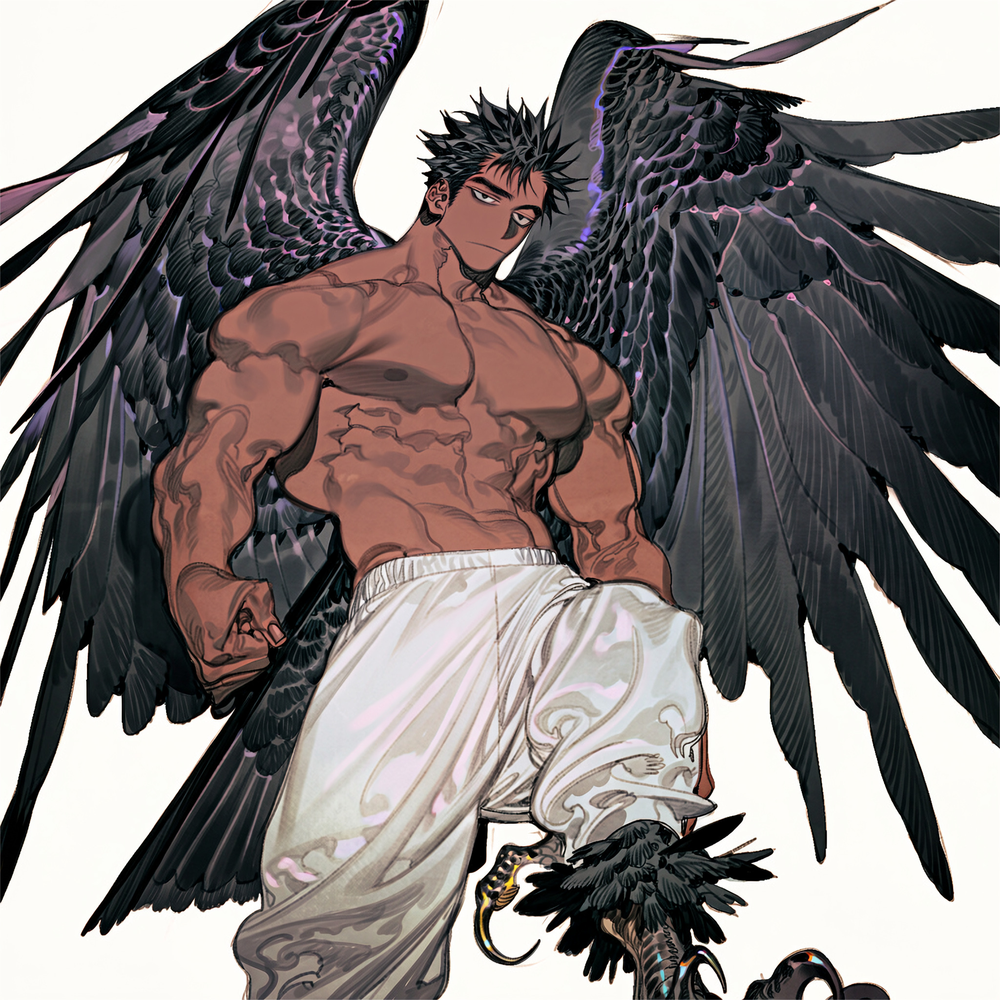

CHARACTER RECORD / 006STATUS: AVAILABLE

✦IMAGE
NOT FOUND
NOT FOUND
クロウ
✦ APPEARANCE ONLY
見た目のみ
PROMPT DATATXT / 006
1boy, pectorals, 2::muscular male physique::, muscular male, heavily muscular, very muscular, bodybuilder physique, broad shoulders, thick arms, massive chest, defined pectorals, thick neck, wide back, muscular torso, huge biceps, huge triceps, defined abs, six-pack, muscular legs, thick thighs, dark skin, dark-skinned male, tsurime, jitome, black eyes, deadpan, expressionless,
short hair, short bangs, black hair, feather hair, beautiful face, human upper body, fully human arms, human hands, human thighs,
bird legs from the calves down, digitigrade bird legs, avian lower legs, feathered lower legs, scaled bird feet, powerful talons, three forward-facing toes and one rear toe, sharp curved claws, natural human-to-avian leg transition, feathers around the calves, feathered ankles,
wings growing from the back, wings attached to the back, large raven wings, large crow wings, functional feathered wings, broad wingspan, folded wings, majestic wings, large layered feathers, detailed primary feathers, detailed secondary feathers, powerful flight feathers, long primary feathers, elegant feather layering, glossy black feathers, iridescent black plumage,
masterpiece, ultra detailed,